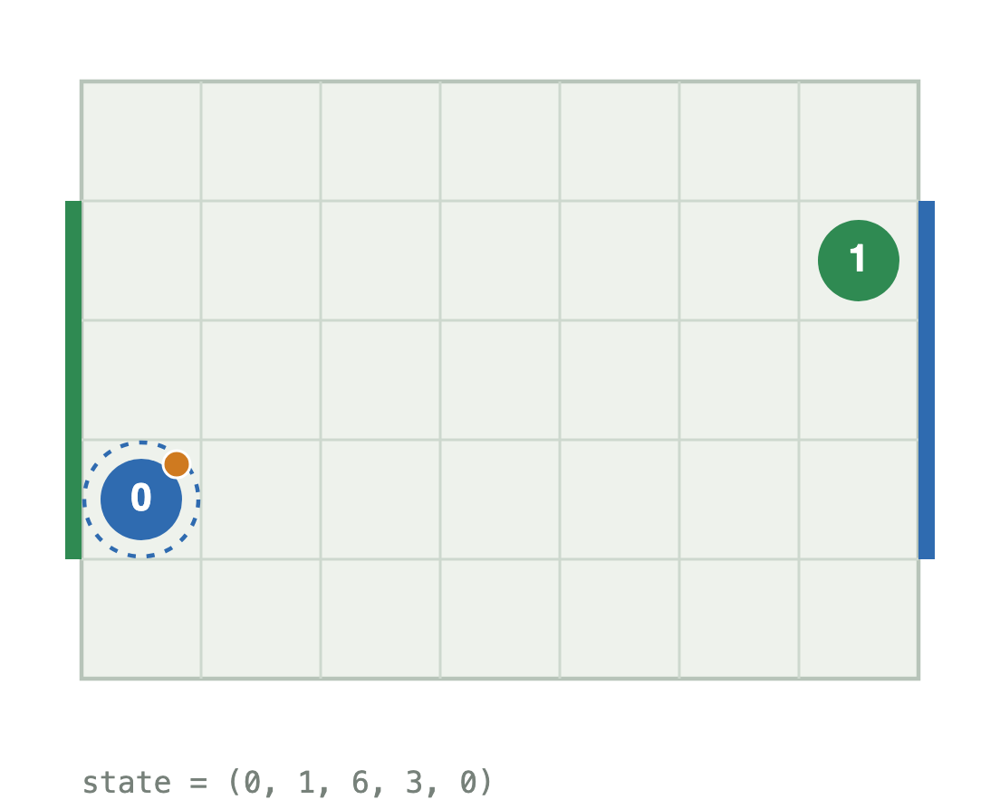
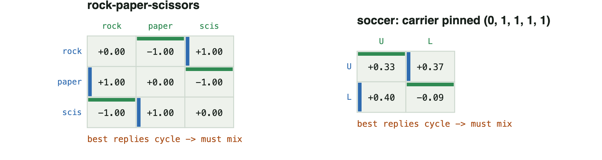
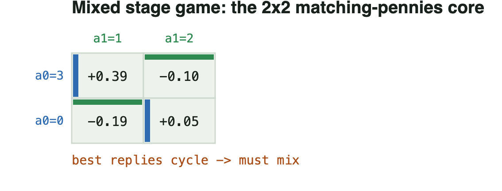
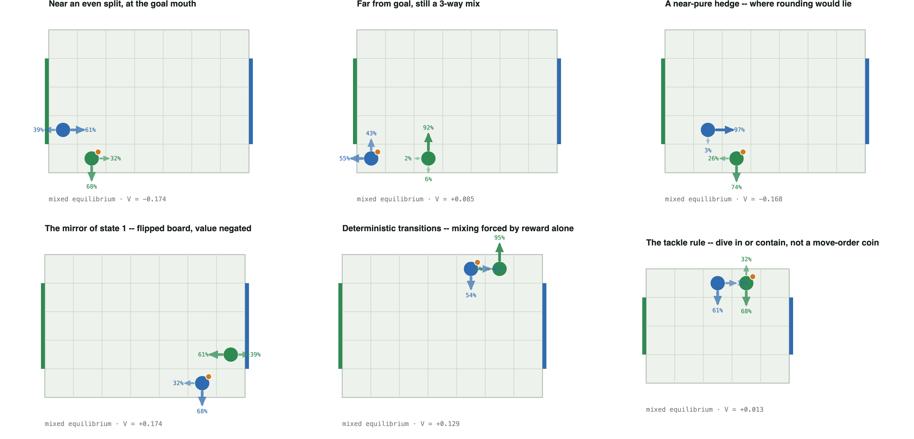
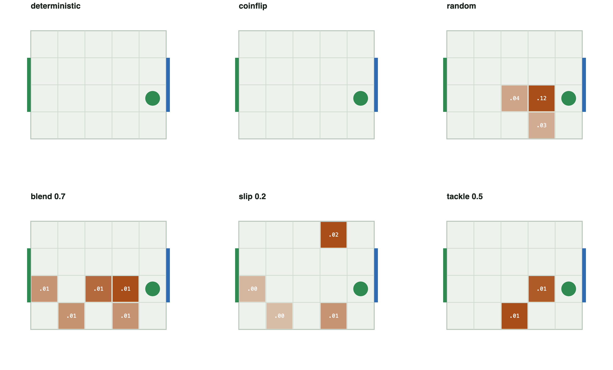
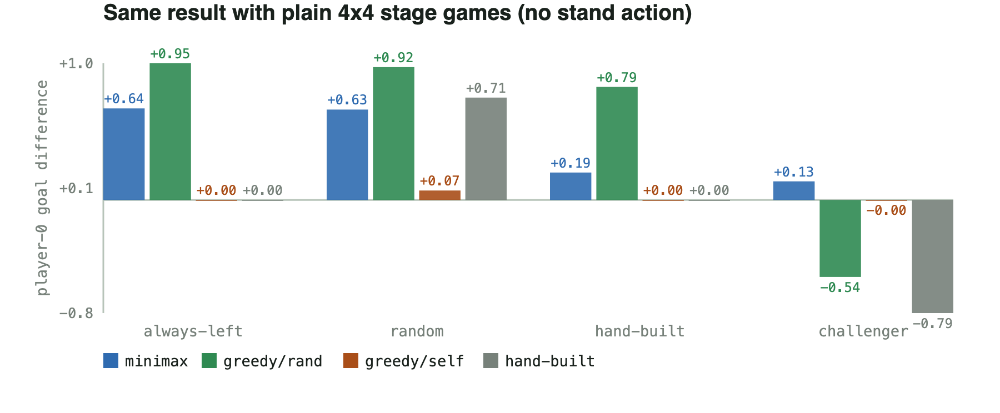

Two players fight over a ball on a grid. Almost always, the smart move is obvious — head for the goal, or stand in the way. But at a precise, identifiable set of moments, the only rational move is to randomize on purpose: to genuinely not know, until the last instant, which way you're going to go. This project pins down exactly when that switch flips — and proves it, exactly, without training a single neural network.

Two players share a small grid. One carries the ball and is trying to reach the opponent's goal; the other is trying to stop them. Each turn, both players choose a move simultaneously — neither sees the other's choice first — and the game plays out from there, discounted so that a goal scored sooner is worth more than one scored later. It is zero-sum: every bit of advantage one player gains is exactly what the other loses. That is what makes it a clean laboratory for a much bigger question — not "how do you play soccer," but "when, exactly, is confident and predictable play the right call, and when does the situation itself force you to bluff?"
To keep the vocabulary unambiguous throughout this page (per this project's own convention — earlier drafts used names like "advance" or "cover the lane" and they only added confusion), every move is just one of four directions, plus an optional fifth action that means "don't move this turn":
Michael Littman's 1994 soccer game already proved that some situations in a game like this force a coin flip — his own example is a player pinned against its own goal with a defender right beside it, where any fixed move can be blocked forever. What Littman's result doesn't say is which situations, in general, need that coin flip and which don't. That's the question a research group brought to this project: not "can this happen," but "exactly when does it happen, and can you tell without running an expensive solver on every single situation?"
The check turns out to be almost embarrassingly simple. Look at one matchup at a time. Does either player have a single move that is at least as good as anything else, no matter what the other player does? If yes, that move is the obvious, unbeatable answer — play it. If every move can be beaten by some response, the two best replies chase each other in a circle. That circle is exactly the shape of rock–paper–scissors, and the only sane move inside it is to genuinely randomize.

Widen the goal from a single defendable cell to two or more cells, and every other setting held fixed, the game's character changes completely. With a one-cell goal, a defender can always plant itself in the only spot that matters — there's nothing to guess about, so every single situation on the board has an obvious, deterministic best move for both players. The instant the goal is wide enough that the defender cannot cover every scoring cell at once, the carrier has a genuine choice of lanes and the defender has to guess which one — and guessing games are exactly where mixed strategies become mandatory, not optional.
Every reachable matchup on the board has a pure, deterministic best move for both players — verified by machine, not assumed.
Mixed strategies become provably necessary — and 68 of those 94 reduce to the same simple pattern: the carrier picking a lane, the defender guessing it.
This switch holds up across board sizes, board shapes, and where exactly the goal sits — it is not a quirk of one particular layout. And it survives a much stronger test: it's exactly the shape needed for a fast shortcut. Rather than running an expensive general-purpose solver on every situation, a solver can check the simple pure-move test first and only fall back to the harder mixed-strategy math on the rare situations that actually need it — skipping that expensive step entirely on the overwhelming majority of the board.

Numbers and heatmaps only go so far, so here are six actual situations, solved exactly and drawn directly. Reading the diagrams: the blue disc is player one, the green disc is player two, the small orange dot is the ball. An arrow's thickness and the percentage beside it are the equilibrium's exact odds of playing that move — one fat, lone arrow means "always do this"; several arrows sharing the weight means the player must genuinely gamble, in precisely those proportions, or hand the opponent a predictable pattern to exploit.

The goal-width switch isn't a one-board coincidence: it survives boards up to roughly 7,800 states, odd aspect ratios, and goals with gaps in them — a defender only ever fails when it genuinely cannot cover every scoring cell at once, regardless of the exact shape. But the switch is specific to why the game is uncertain, not to uncertainty in general. Add a completely different kind of randomness — players occasionally slipping and moving the wrong way by accident, on every square, independent of either player's choice — and the mixing requirement reappears even with a single-cell goal. A shared coin everywhere produces guessing everywhere; a coin that only shows up where lanes cross produces guessing only there.

Solving for the correct mix is worthless if it doesn't matter in practice, so four policies were pitted against four opponents, including one built specifically, for each policy, to find and punish its weakness. Minimax is the exact policy this project solves for — it mixes exactly where the theory says it must, and stays pure everywhere else. The other three never mix: greedy/self always plays it safe, greedy/rand plays the single best reply to a random opponent, and hand-built is a scripted, common-sense "drive at the goal, block the direct path" defense.
| Policy | vs. always-left | vs. random | vs. hand-built | vs. its own challenger |
|---|---|---|---|---|
| Minimax (this project's policy) | +0.64 | +0.63 | +0.19 | +0.13 |
| Greedy / random-beater | +0.95 | +0.92 | +0.79 | −0.54 |
| Greedy / play-it-safe | 0.00 | +0.07 | 0.00 | −0.00 |
| Hand-built defense | 0.00 | +0.71 | 0.00 | −0.79 |
expected goal difference, exact solve, no simulation noise
Every deterministic policy looks strong against a weak opponent and then collapses the moment a challenger is built to exploit it — because a fixed pattern always has a fixed counter, exactly like always throwing rock. Only the policy that knows how, and how much, to randomize survives being specifically hunted. That's the entire practical payoff of doing the harder math on the small slice of situations that actually require it, instead of a policy that looks clever until someone studies it.

{U, D, L, R} action set requested at the
research meeting — no fifth "stand" action needed for the result to
hold.Strip away the ball and the grid, and the question underneath this project is one that appears anywhere two or more decision-makers with opposing or partly opposing goals act in the same environment: poker-playing agents, adversarial-robustness testing, pricing and auction bots, multi-robot coordination. In every one of those settings, being perfectly predictable is a liability the moment someone else is watching closely enough to exploit it — but paying the cost of "always consider randomizing" everywhere is wasteful, because most situations really do have a clean, deterministic best answer.
This project's contribution is a cheap, exact way to tell which regime a given situation is in — a check that costs almost nothing and never guesses wrong — instead of defaulting to an expensive general solver everywhere or, worse, a policy that is confidently deterministic in exactly the spots where that confidence is a losing bet.